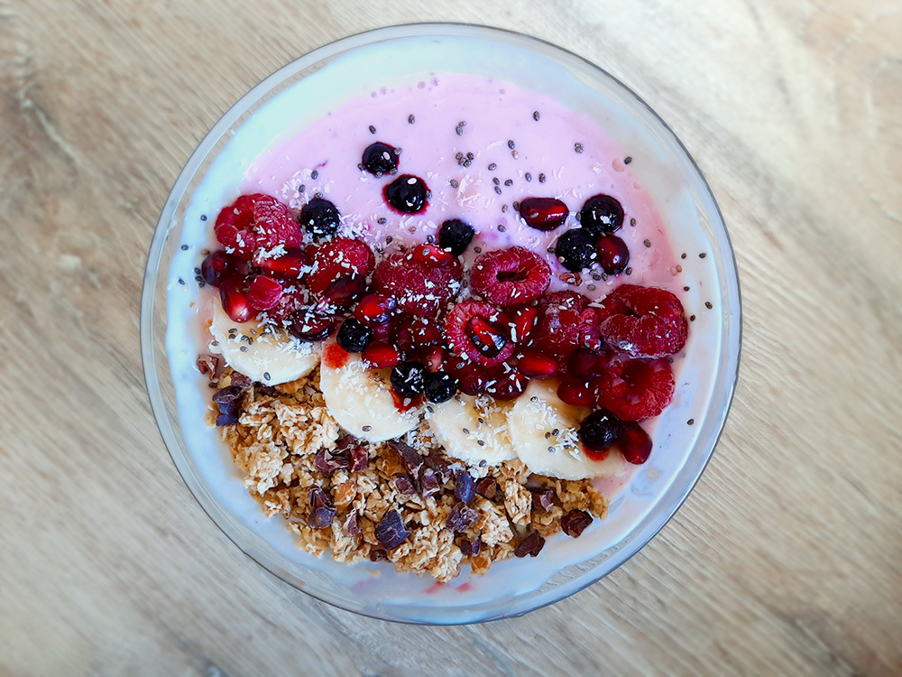

falafelwrap

indiase tikka masala

tropische pepernoten

chocoladefondue

groene smoothie

schotse cranachan

crêpe met fruit

engelse trifle

salade met gegrilde ananas

blauwe taart

couscousbowl

geroosterde aubergine

roze ontbijtbowl
Deze vegan ontbijtbowl is te maken met elke fruitsoort.

Bereidingsduur: 5 minuten
Aantal personen: 1
Ingrediënten:
130 gram kokosyoghurt
1 banaan
naar smaak cruesli
naar wens dadels
1 eetlepel agavesiroop
1 handje frambozen
1 handje blauwe bessen
1 handje granaatappelpitjes
naar smaak kokospoeder
optioneel cacaonibs
optioneel chiazaad
130 gram kokosyoghurt
1 banaan
naar smaak cruesli
naar wens dadels
1 eetlepel agavesiroop
1 handje frambozen
1 handje blauwe bessen
1 handje granaatappelpitjes
naar smaak kokospoeder
optioneel cacaonibs
optioneel chiazaad
Instructies:
1. Prak de helft van de banaan en snijd de dadels in kleine stukjes. Meng dit met de yoghurt, de agavesiroop en enkele geprakte frambozen en blauwe bessen.
2. Snijd de rest van de banaan in schijfjes en leg deze samen met de frambozen, blauwe bessen, granaatappelpitjes en cruesli op de yoghurt.
3. Strooi wat cacaonibs, geraspte kokos en chiazaad eroverheen.
1. Prak de helft van de banaan en snijd de dadels in kleine stukjes. Meng dit met de yoghurt, de agavesiroop en enkele geprakte frambozen en blauwe bessen.
2. Snijd de rest van de banaan in schijfjes en leg deze samen met de frambozen, blauwe bessen, granaatappelpitjes en cruesli op de yoghurt.
3. Strooi wat cacaonibs, geraspte kokos en chiazaad eroverheen.